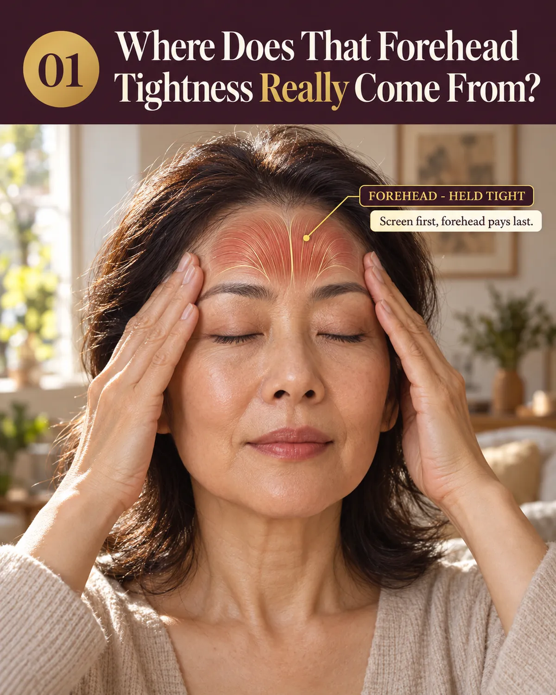

THE BOJIN JOURNAL
See the movement. Understand the detail.
Visual technique guides or thoughtful essays. Begin at your own pace.
Explore visual breakdowns and muscle maps for clear technique, or read thoughtful essays on everyday tension habits.
WATCH & EXPLORE
Visual Technique Guides
Short clips, anatomical maps, and movement comparisons for the eye area.
Explore 3 eye-area regions →
READ & REFLECT
In-Depth Articles
Essays on screen fatigue, jaw clenching, neck tension, and daily habits.
Browse all articles →
FEATURED · BROWS & FOREHEAD (REGION 01)
Start with a small detail you noticed today
READ & LEARN · ESSAYS
Essays on Facial Tension & Daily Habits
Showing 6 articles

Brows & Forehead
Forehead tension after screen time? Start with what you can notice
Read article →
Brows & Scalp
The tightness in your scalp is showing up on your face
Read article →
Jaw & Neck
Clench or grind your teeth? An honest look at jaw tension and bojin
Read article →
Jaw & Neck
That tired look might start in your neck, not your face
Read article →
Daily Habits
Why rounded shoulders can make your whole face look heavier
Read article →
Daily Habits
Why your face looks more tired at 9 PM than at 9 AM
Read article →No matching articles found. Try another keyword.
NEXT · EYE AREA REGIONS
Want to explore the eye-area movement guides?
Continue to our three eye-area regions—from brows to the upper and lower orbital rims.
BROWSE BY CONCERN · COMPLETE ARCHIVE
All 99+ Guides Organized by Area
Eyes & Brows (12 guides)Open hub →
- Heavy, low brows making your eyes look smaller?
- Heavy, hooded eyelids making you look tired?
- Tired, puffy eyes every morning? A gentle 5-minute reset for women over 40
- Under-eye bags after 50? A gentle 5-minute reset
- Dark circles that won't fade even after a full night's sleep?
- Crow's feet at the corners of your eyes?
- Hollow, Sunken Under-Eyes? It's Not Just Tiredness
- Is your eye cream just sitting on top?
- Screen-tired eyes by mid-afternoon? A 2-minute desk reset
- Menopause and tired-looking eyes? A gentle 5-minute morning reset
- After You Cry, Your Face May Need a Pause
- Wear Glasses? How to Work the Forehead, Temples, and Eye Area Around Your Frames
Forehead & Scalp (8 guides)Open hub →
- Frown lines and a tense brow: what to notice before trying Bojin
- Forehead lines getting deeper? Separate the look from the feeling
- A tense forehead you only notice at the end of the day?
- Forehead tension after screen time? Start with what you can notice
- Why frown lines can deepen faster around menopause
- "Natural alternatives to Botox" for your forehead: an honest look
- Where Forehead Tightness Actually Starts: Your Scalp and Hairline
- The Tightness in Your Scalp Is Showing Up on Your Face
Cheeks & Smile Lines (8 guides)Open hub →
- Smile lines settling in and cheeks a little lower? A gentle 5-minute mid-face lift
- Are Nasolabial Folds Permanent? An Honest Answer
- A 3-Minute Cheek Reset Before You Put On Makeup
- Puffy Cheeks and Deeper Smile Lines After a Flight? A Post-Travel Reset
- Vertical Lip Lines and Lipstick That Feathers
- Mouth Corners Turning Down? What's Really Happening
- Lost Weight and Your Face Looks Hollow? An Honest Answer
- Stuffed Up? Sinus Congestion and That Heavy-Face Feeling
Jaw & Chin (8 guides)Open hub →
- A Dimpled, Pebbly Chin? The Small Muscle Behind It
- A softer jawline and a little double chin? A gentle jaw and neck release
- Jowls Forming Along Your Jawline? What's Underneath
- Clench or Grind Your Teeth? An Honest Look at Jaw Tension and Bojin
- Why Your Jaw Feels Tight by the End of the Day, and a 3-Minute Evening Release
- A 2-Minute Jaw Reset Before Your Next Video Call
- Why One Side of Your Face Looks Different From the Other
- After Dental Work, Implants, or a Root Canal: How Long to Wait
Neck & Shoulder Line (8 guides)Open hub →
- That Tired Look Might Start in Your Neck, Not Your Face
- Those Horizontal "Necklace" Lines on Your Neck
- Loose Skin and Lines Along Your Neck?
- Crepey Skin on Your Neck and Under Your Eyes
- Why Rounded Shoulders Can Make Your Whole Face Look Heavier
- When Your Shoulders Won’t Drop, Your Face Can Feel Tired Too
- The Point Behind Your Ear: Why Almost Every Routine Ends There
- Your Ears and Earlobes: The Zone Almost Everyone Skips
Tired-Looking Face (11 guides)Open hub →
- Why Your Face Looks More Tired at 9 PM Than at 9 AM
- Dull, puffy, tired-looking skin? A gentle 5-minute full-face reset
- Why Your Complexion Looks Sallow, Grey, or Washed Out
- What should a simple morning face ritual look like?
- What Should Your Evening Face Ritual Actually Undo?
- The Two-Minute Bad-Day Routine
- A 4-Week Face Countdown Before a Wedding or Reunion
- Do Sleep Creases and Pillow Lines Undo Your Bojin Work?
- Why Your Whole Face Feels Different in Perimenopause
- Hot Flashes and a Flushed Face: Should You Work on It?
- Do you really need expensive facials? What a few home minutes can really do
What is Bojin? (9 guides)Open hub →
- Gua sha and bojin: the tool and the technique, and how they fit together
- Is Bojin Just Gua Sha With a Fancier Name?
- Gua sha not giving you results? The simple fix most people miss
- Does Facial Gua Sha Actually Work? Straight Talk for Skeptics
- Bojin vs. Face Yoga: Which One Fits What Your Face Needs?
- Bojin vs. the Jade Roller in Your Drawer
- Bojin vs. Microcurrent Devices: Which Is Worth It?
- What Bojin Can and Cannot Do for Your Face (An Honest List)
- How Long Until You Actually See a Difference?
Is It Safe? (7 guides)Open hub →
- Is Bojin Safe? Who Should Be Careful, and When to Skip It
- Who Should Skip Bojin for Now (or Ask a Doctor First)
- Redness, Soreness, or a Warning Sign? How to Tell What's Normal After Bojin
- Can Bojin Make Your Face Saggier? An Honest Answer
- Had Botox or Filler? What to Wait for Before You Start Bojin
- Where Does Bojin Fit With Retinol and Other Actives?
- Peach Fuzz, Facial Hair, and Dermaplaning: Does Bojin Change Anything?
Learn the Method (30 guides)Open hub →
- Your First 5 Minutes: A Tiny, Safe Way to Begin
- How Hard Should You Press? The Bojin Pressure Question, Answered
- The Angle of the Tool: Why a Few Degrees Changes Everything
- The Supporting Hand: What Your Other Hand Should Be Doing
- Why the Order Matters: Warm, Work, Then Finish Down the Neck
- How Fast Should You Move? Speed Is Its Own Variable
- How Many Times Should You Work One Spot?
- How You End a Session Matters More Than You Think
- Are You Holding Your Breath? Breathing While You Work
- Does Your Posture Matter While You Work?
- Mirror or By Feel? Two Ways to Work, and When to Use Each
- Which Hand Should Hold the Tool? Dominant vs. Non-Dominant
- How to Hold the Handle: The Grip Behind a Steady Stroke
- Do Both Sides of Your Face Need Equal Time?
- How Often Should You Actually Do This? (Less Than You'd Think)
- Building a Bojin Habit: The Trick That Actually Works
- Starting in Your 40s vs. Your 60s: Does the Method Differ?
- What You Feel Under the Tool, and What Each Sensation Means
- Dry or With Oil? The Slip Rule for Less Tugging on Mature Skin
- Which Oil or Cream Should You Use for Bojin?
- Fingers, a Gua Sha Stone, or a Bojin Stick: What to Use
- The Two Ends of Your Bojin Stick: When to Use Each
- Why a Stainless Steel Bojin Stick, Not the Pretty Jade Stone You Own
- How to Clean and Care for Your Bojin Stick
- Should You Chill Your Bojin Stick? What Temperature Actually Does
- Traveling With Your Bojin Stick: What to Pack, What to Skip
- Sore Hands or a Weak Grip? How to Hold the Tool Differently
- Doing Bojin on Someone Else: What Changes
- Sharing This With Someone You Love
- Does Your Routine Need to Change With the Seasons?